Festen din har fått en regissør.
Skriv inn gjengen, velg anledning og hvor lenge kvelden skal vare. Regissøren styrer resten: festleker, quiz og prisutdeling, alt på norsk.
Gratis å prøve. Ingen konto og ingen reklame. For 18 år og eldre.
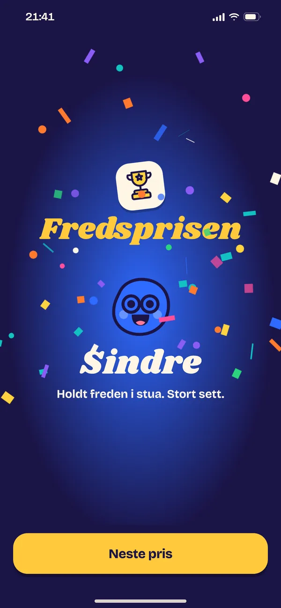
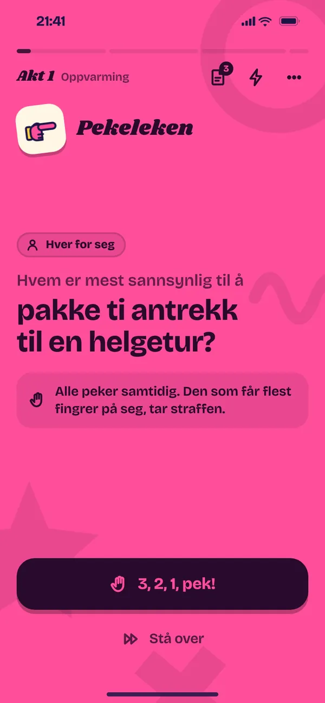
En kveld som et show
Regissøren setter sammen kvelden for akkurat deres gjeng, på 30, 60 eller 90 minutter. Det blir lag, dueller og regler som kommer og går, og til slutt får alle en pris.
- Akt 1
Oppvarming
Lagene trekkes, husreglene leses opp, og de første pekene går. Alle er med fra første kort.
- Akt 2
Konflikten
Dueller, hemmelige oppdrag og plot twist. Det som skjedde for en time siden, dukker opp igjen.
- Finale
Prisutdelingen
Alle får en pris, og rulleteksten ruller med navnene deres. Kvelden får en slutt, ikke bare et siste kort.
- Plot twistHjulet bytter lag, dobler potten eller gir noen frikort.
- Hemmelige oppdragEn får et oppdrag i hemmelighet. Senere gjetter gjengen hvem.
- KonvoluttenSpådommer forsegles i første akt og åpnes i finalen.
- Nye reglerAlle snakker bergensk til Regissøren sier stopp.
- TilbakeblikkDet dere pekte på for en time siden, dukker opp igjen.
- HurraEt hurrarop for den som fortjener det.
20 spill, alle på norsk
Over 2 800 kort, ord og spørsmål skrevet på norsk, med Kiwi, hyttetur og 17. mai i stedet for oversatte amerikanske kort. La Regissøren mikse kvelden, eller velg spillene selv.
Prøv et kort
Velg et spill og trekk et kort, rett fra appen. Velg nivå og hvor godt dere kjenner hverandre, så velger Regissøren kortene som passer.
Hvem er mest sannsynlig til å
bli kjendis?
Alle peker samtidig. Den som får flest fingrer på seg, tar straffen.
Klassikerne
Gratis når dere velger spillene selv.
Pekeleken
Hvem er mest sannsynlig til å ...? Alle peker på tre, og den som får flest fingrer på seg, tar straffen.
Regler og 40 spørsmålJeg har aldri
Har du gjort det, tar du straffen. Du finner fort ut hvem som har sovnet på kino.
Regler og 50 påstanderVil du heller
To valg, og alle velger på tre. De som havner i mindretall, tar straffen.
Regler og 40 spørsmålSannhet eller konsekvens
Svar ærlig eller ta utfordringen. Gjennomfører du, får du en stjerne.
Spørsmål og utfordringer
Regissørens egne
Regissøren mikser dem inn i kveldene. Vil dere velge dem selv, følger de med Fullversjon.
Hvem er jeg?
Mobilen i panna. De andre gir hint uten å si ordet, og du vipper ned for riktig og opp for pass.
Emojirebus
Gjett filmen, sangen eller ordet mens emojiene dukker opp en etter en. Raskest vinner.
Dueller
En mot en, og gjengen dømmer. Taperen får revansj senere i kvelden, og Lynduellen avgjøres på reaksjonstid.
Bomben
Si noe i kategorien og send telefonen videre. Den som holder den når den smeller, tar straffen.
Tankeleser
En ser målet på skalaen og gir et hint. Resten vrir nåla dit de tror det er.
Gjett og test
Alle gjetter, og så blir det testet på ekte. Nærmest vinner.
Bløffen
Alle unntatt en ser det hemmelige ordet. Si ett ord hver, og pek ut bløfferen.
Ordjakt
Forklar, mim eller lag lyder mens laget gjetter så mange ord som mulig før tiden er ute.
Kategorikampen
Lagene nevner så mange de kan i en kategori på 30 sekunder, og det andre laget teller.
Tallkampen
Hvor mange kilometer er det til månen? Lagene gjetter et tall, og nærmest vinner.
To sannheter og en løgn
En forteller tre ting om et tema. To er sanne, en er løgn. Lurer du flest, får du en stjerne.
Løgnquizen
Et sant fakta med et hull. Alle skriver en løgn som passer, og så skal dere finne sannheten blant løgnene.
Sorteringsrunden
Fire ting i riktig rekkefølge, eldst eller størst først. Lagene sorterer på mobilen eller sier det til verten.
Tegning, svar og varulv
Med Fullversjon. Varulv følger også med Hyttepakka.
Tegnespill
Fire tegnespill i ett: Tegn og gjett, Hviskestreken, Kunstbløffen og Tre kunstnere, med vrier som blindtegning og feil hånd.
Svarduellen
To svarer på det samme spørsmålet, og resten stemmer frem det morsomste svaret.
Varulv
Hele gjengen spiller, og appen er fortelleren. Varulvene tar noen hver natt, og landsbyen må finne dem.
Slik ser det ut
Ekte skjermbilder fra appen. Hver scene har sin egen farge, og Regissøren sier hva som skjer.
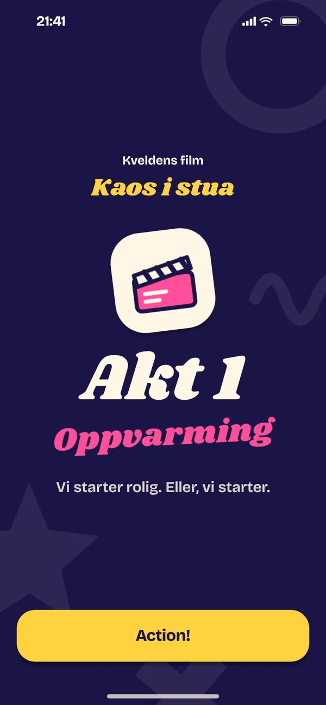
Første akt begynner 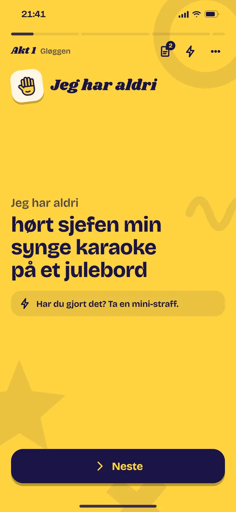
Jeg har aldri 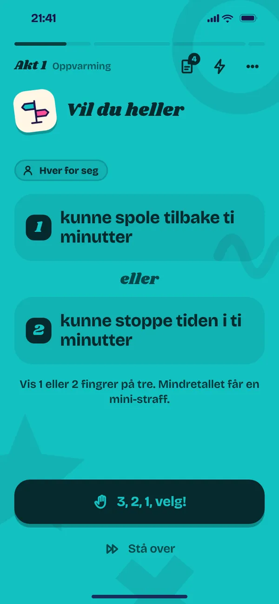
Vil du heller 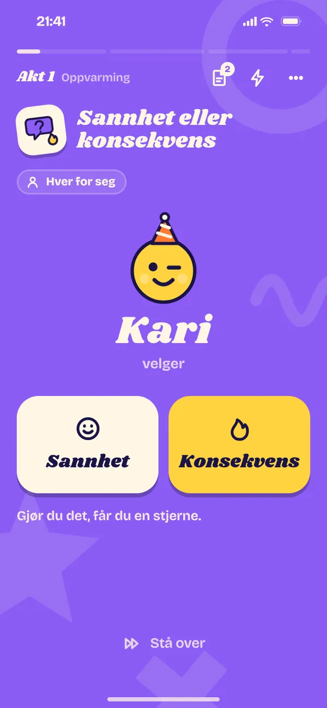
Sannhet eller konsekvens 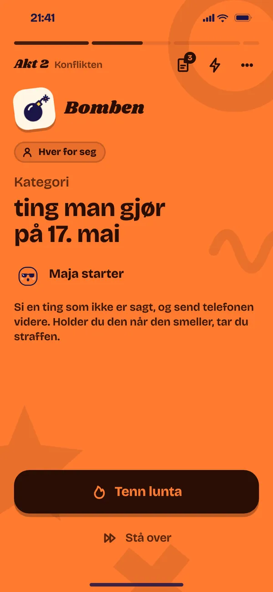
Bomben 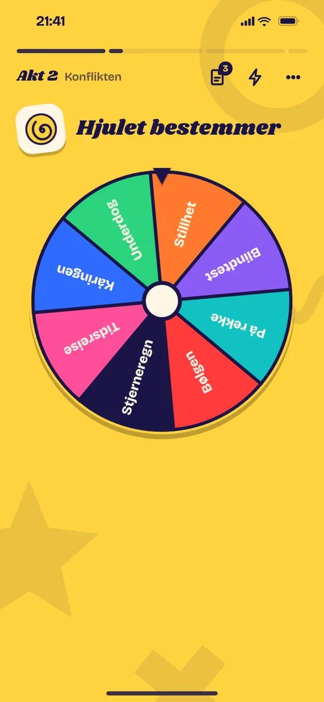
Plot twist-hjulet 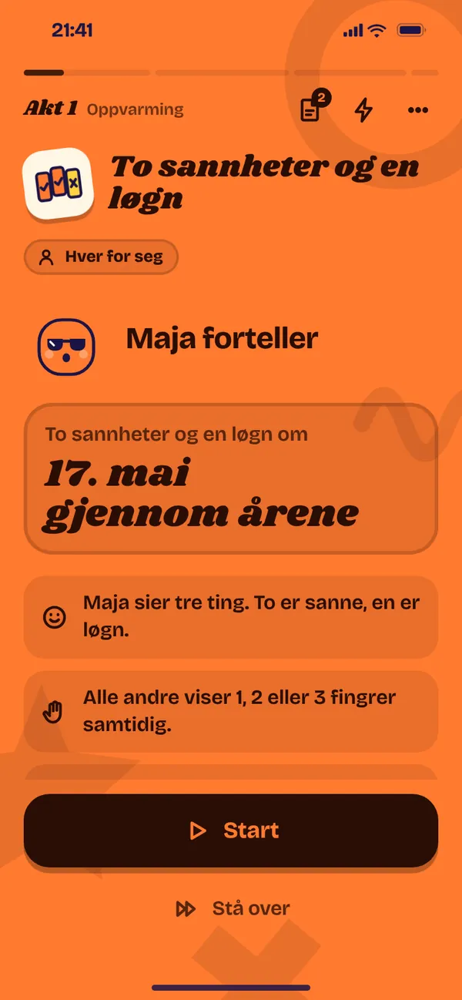
To sannheter og en løgn 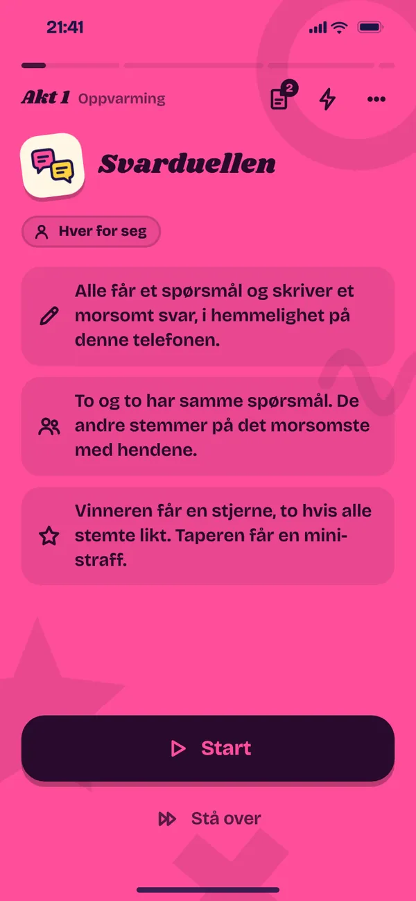
Svarduellen 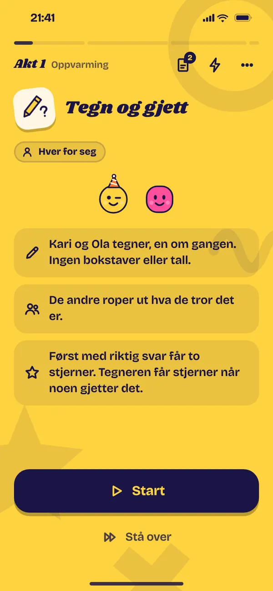
Tegn og gjett 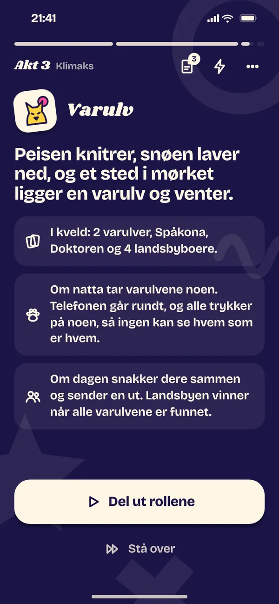
Varulv 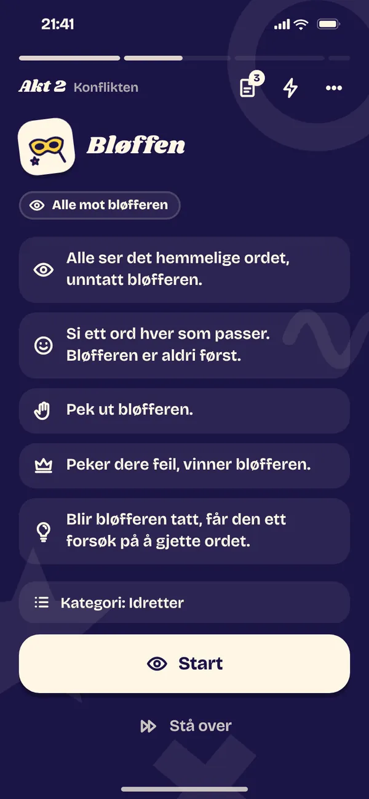
Bløffen 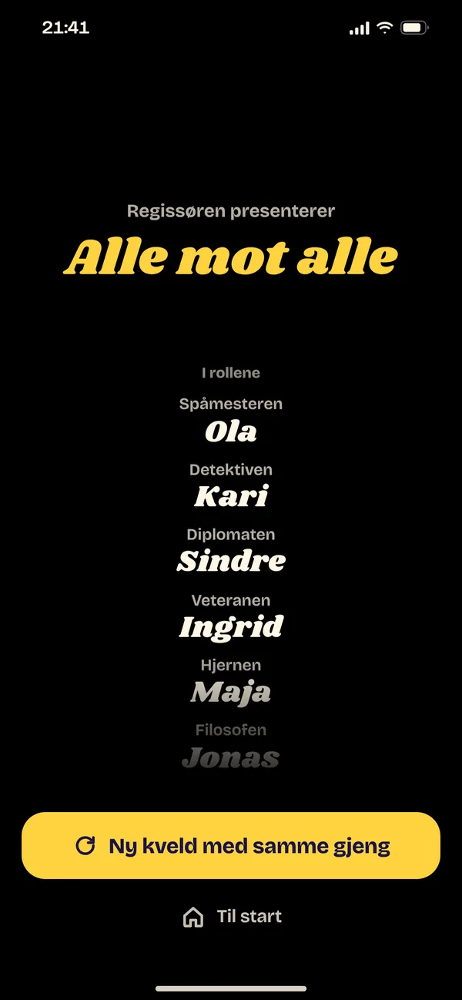
Rulleteksten
Quiz på alles mobiler
Over 5 200 spørsmål, påstander og rebuser i 25 temaer, fra allmennkunnskap, film og sport til 90-tallet. Alle svarer på sin egen mobil, også verten, og Regissøren teller poengene.
- Verten velger temaer og slår på Svar på hver sin mobil.
- Gjestene trykker Bli med i appen, som finner kvelden på wifi-en, eller skanner QR-koden.
- Spørsmålene kommer på alle skjermene, og poengene telles av seg selv.
- FirevalgFire alternativer, ett svar per lag.
- LynrundenFørst med riktig svar tar poenget.
- EmojirebusGjett tittelen fra emojiene.
- LøgnquizenFinn sannheten blant løgnene.
- SorteringsrundenFire ting i riktig rekkefølge.
- Sist ståendeSant eller usant. Feil, og du setter deg.
- Alt eller ingentingSats poengene på ett siste spørsmål.
Allmennkunnskap er gratis. Quizpakka gir de 24 andre temaene og svar på hver sin mobil. Alle må være på samme wifi. Se 40 quizspørsmål med svar.
- Allmennkunnskap
- Norge
- Geografi
- Historie
- Vitenskap
- Film
- TV og serier
- Musikk
- 80-tallsmusikk
- Popkultur
- Sport
- Mat
- Høytider
- Dyreriket
- Kjøretøy
- Merkevarer
- Gaming
- Anime
- 90-tallsbarn
- 2000-tallsbarn
- 2010-tallsbarn
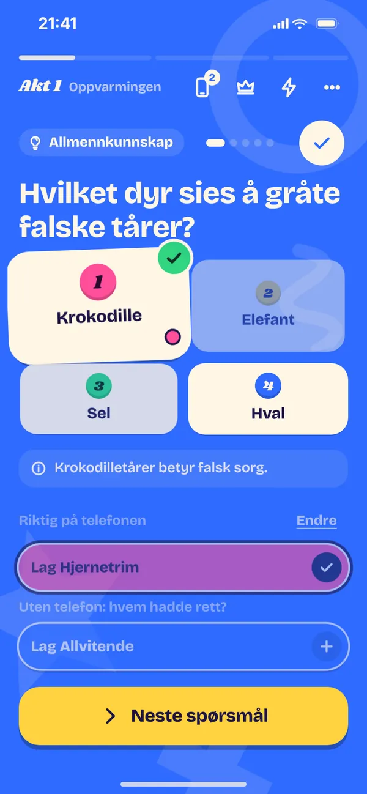
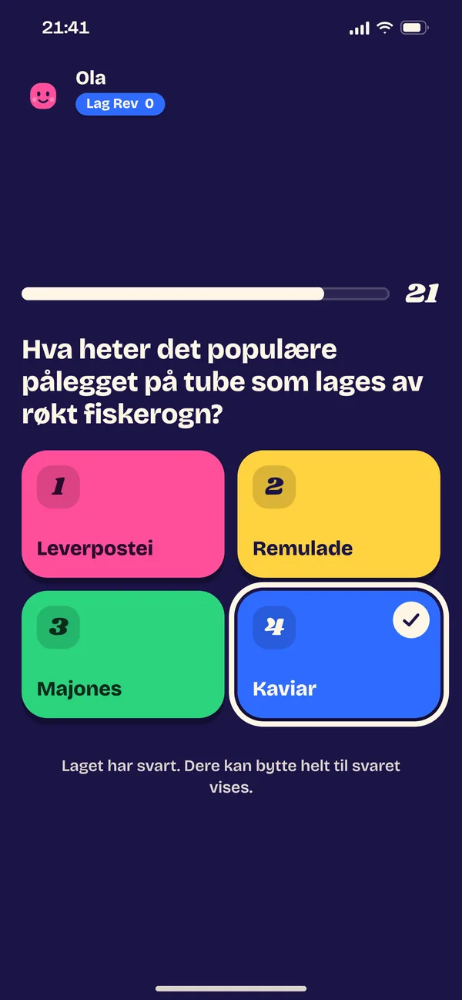
Mobilen i panna
Hvem er jeg? Hold telefonen på tvers mot panna. De andre gir hint uten å si ordet, og du vipper ned for riktig og opp for pass. Kjendiser, figurer, filmer, steder, dyr og ting, på en, to eller fem minutter.
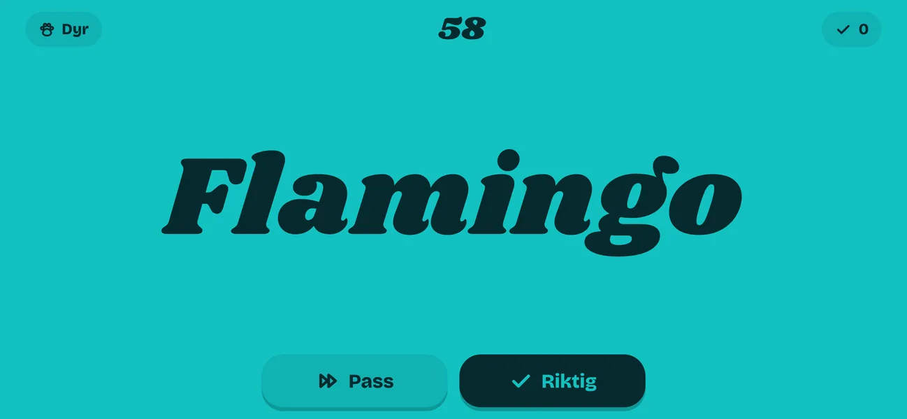
Klar for anledningen
Velg anledning, så tilpasser Regissøren aktene, kortene og prisene. Quizen og Velg spill selv kan spilles fra to, de andre fra tre, og opptil 16.
Fest
GratisFestleker i akter, med lag, dueller og hemmelige oppdrag. Gratis på 30 minutter.
Quiz
GratisEn hel quizkveld med runder, finale og prisutdeling. Allmennkunnskap er gratis.
Quizspørsmål med svarEtterfest
GratisRoligere og mer personlig utover natta, med egne kort.
Julebord
PakkeAkter fra Forretten til Dansegulvet, og kort som funker med kollegaer.
JulebordlekerHyttetur
PakkeAnkomst, Peiskos og Natta, med kort laget for hytta og Varulv til slutt.
HyttelekerBursdag
PakkeBursdagsbarnet har hovedrollen hele kvelden, og navnet dukker opp i kortene.
BursdagslekerVelg spill selv
Gratis og FullversjonPlukk bare spillene dere vil ha. De fire klassikerne er gratis.
Ferdig før taxien kommer
Si når dere skal dra, så blir kvelden ferdig et par minutter før taxien kommer, med finale og prisutdeling. Taxi-modus følger med Fullversjon og pakkene.
Klapp eller mini-straff
Straff i Regissøren er å klappe i hendene, fra en til fem ganger etter hvor tøft nivå dere velger.
- Straffen er å klappeLett, Medium, Hard eller Kaos bestemmer hvor mange klapp.
- Mini-strafferMorsomme småting i stedet, for en spiller eller for hele kvelden.
- Stå overDet er alltid lov å stå over, uten å forklare hvorfor.
- Ta vare på hverandreAlle utfordringer er frivillige. Ingen må gjøre noe de ikke vil.
Gratis å prøve. Betal bare en gang.
Ingen abonnement og ingen reklame. Kjøp gjelder på alle telefonene med samme Apple-ID eller Google-konto.
Gratis
- Så mange kvelder dere vil på 30 minutter: Fest, Quiz og Etterfest
- Nivåene Mild og Medium
- Allmennkunnskap i quizen
- De fire klassikerne i Velg spill selv
- Ingen konto og ingen reklame
Fullversjon
Alt i appen, for alltid
- Alle lengder og taxi-modus
- Alle 20 spillene i Velg spill selv
- Nivået Sterk og egne kort
- Quizpakka med alle 25 temaene og svar på hver sin mobil
- Julebord-, Hytte- og Bursdagspakka
Quizpakka
24 temaer til, svar på hver sin mobil og alle lengder på quizkvelden.
49 krJulebordpakka
Over 500 kort, ord og spørsmål, egne akter og priser.
49 krHyttepakka
Over 500 kort til hytteturen, og Varulv til slutt.
49 krBursdagspakka
Bursdagsbarnet i hovedrollen hele kvelden.
49 kr
Regler og ideer
Regler og eksempler fra appen til de mest kjente lekene, og leker til julebordet, hytta og bursdagen.
- PekelekenRegler og 40 spørsmål
- Jeg har aldriRegler og 50 påstander
- Vil du heller40 spørsmål
- Sannhet eller konsekvensSpørsmål og utfordringer
- Quizspørsmål med svar40 spørsmål til quizkvelden
- JulebordlekerLeker som funker med kollegaer
- HyttelekerTil peiskosen og Varulv
- Bursdagsleker for voksneBursdagsbarnet i hovedrollen
- Leker til vorsetDrikkeleker og festleker
Spørsmål og svar
Hva koster Regissøren?
Appen er gratis å laste ned, og dere kan spille så mange kvelder dere vil på 30 minutter. Fullversjon er et engangskjøp på 99 kroner, og hver pakke koster 49 kroner. Ingen abonnement og ingen reklame.
Hvor mange kan spille?
Fra to til 16. Quizen og Velg spill selv kan spilles fra to, de andre anledningene fra tre. Noen spill trenger flere: Bløffen og Ordjakt fire, Varulv fem.
Hva er straffen?
Å klappe i hendene, fra en til fem ganger etter hvor tøft nivå dere velger. Hver spiller kan få morsomme mini-straffer i stedet, og det er alltid lov å stå over.
Trenger vi internett?
Nei. Kvelden går på telefonen til verten. Skal flere svare på hver sin mobil, må alle være på samme wifi, eller koblet til vertens delte internett.
Hvordan blir gjestene med på mobilen?
Verten slår på Svar på hver sin mobil. Gjestene trykker Bli med i appen, som finner kvelden på wifi-en, eller skanner QR-koden på vertens skjerm. Regissøren teller poengene.
Finnes appen for både iPhone og Android?
Ja. Regissøren finnes i App Store og på Google Play.
Samler appen inn data om meg?
Nei. Det finnes ingen konto og ingen reklame. Navn, egne kort og kvelder lagres bare på telefonen. På Android bruker kodeskanneren Googles tjenester, se personvernerklæringen.
Hvem er appen for?
Voksne over 18 år. Nivået Mild passer når ikke alle kjenner hverandre, og Sterk når gjengen vil ha det drøyere.
Fant du ikke svaret? Se hjelp og kontakt, eller skriv til berentsenmedia@gmail.com.
Klar for kveldens forestilling?
Last ned Regissøren, skriv inn gjengen og trykk Start kvelden. Første kveld er gratis, og den neste også.